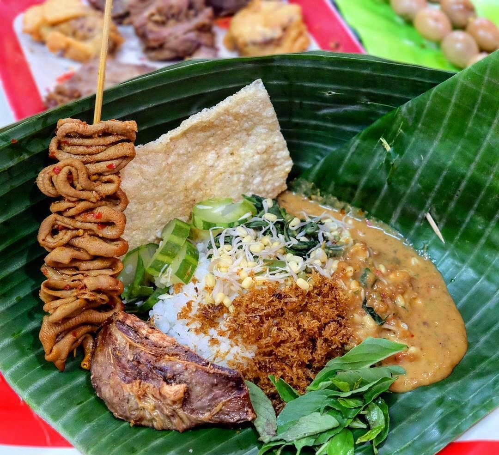

Share :
Pecel atau pecal adalah makanan yang menggunakan bumbu sambal kacang sebagai bahan utamanya yang dicampur dengan aneka jenis sayuran. alam bahasa Jawa, pecel dapat diartikan sebagai ‘tumbuk’ atau ‘dihancurkan dengan cara ditumbuk. Makanan ini populer terutama di wilayah DI Yogyakarta, Jawa Tengah, dan Jawa Timur.
Di Jawa Timur sendiri, pecel menjadi salah satu sajian favorit. Hampir di setiap tempat di Jawa Timur menyediakan pecel dengan kekhasan masing-masing. Secara umum, pecel Jawa Timur memiliki rasa yang lebih pedas dibandingkan dengan pecel di Jawa Tengah dan Yogyakarta. Pecel di Jawa Tengah dan Yogyakarta memiliki rasa yang cenderung manis.

Pecel Madiun menjadi salah satu pecel paling legendaris di Jawa Timur. Pecel ini terkenal karena sambalnya yang relatif lebih pedas dan gurih. Selain itu, Pecel Madiun juga memiliki banyak komponen tambahan seperti beragam sayuran rebus, kemangi, serundeng, oseng-oseng tempe, mi kuning, dan rempeyek. Penjual Pecel Madiun biasanya juga menyediakan berbagai macam gorengan dan berbagai jenis tusukan seperti usus, telur puyuh, ati-rempela, dan lain sebagainya.
Sambalnya yang khas serta kelengkapan komponen menjadi ciri khas Pecel Madiun. Sayuran rebus yang menyertai Pecel Madiun di antaranya kacang panjang, bunga turi, kecambah, kenikir, bayam, daun singkong, dan daun pepaya. Selain itu, biasanya juga terdapat bahan lain seperti petai cina, kemangi, dan potongan mentimun. Lauk pauk yang menyertai penyajian Pecel Madiun antara lain tempe, tahu, telur ceplok, telur dadar, telur asin, dagimg empal, ati-rempela, dan lain sebaiganya.
Banyaknya lauk pauk yang tersedia kerap kali membuat penikmatnya bingung menentukan pilihan. Seluruh jenis lauk-pauk yang disajikan oleh penjual rasanya nikmat disantap bersama Pecel Madiun. Selain di Madiun, Pecel Madiun ini bisa dijumpai di banyak tempat di Jawa Timur. Penjual biasanya memberi keterangan pada warung atau lokasi dagangnya. Hanya saja, Pecel Madiun yang tersebar di berbagai tempat tidak selalu lengkap. Komponen Pecel Madiun ini sangat dipengaruhi oleh penjualnya. Tapi yang pasti, Pecel Madiun di manapun selalu disertai dengan rempeyek.
Kelezatan Pecel Madiun tentu sudah banyak yang mengetahui. Karena kelezatannya pula, makanan ini bisa ditemukan di berbagai daerah di Indonesia. Karena warung Pecel Madiun banyak tersebar di mana-mana. Di Madiun sangat banyak ditemui penjual nasi pecel mulai dari kota sampai pelosok pedesaan. Di daerah ini pecel bisa dinikmati setiap waktu, bisa pagi, siang maupun malam. Sehingga tak salah jika daerah ini mendapat julukan Kota Pecel.
Warung Nasi pecel 99 berdiri sejak tahun 1987 oleh Pak Karyono dan Bu Heriyati di Jalan Cokroaminoto, Madiun. Jalan ini merupakan jalan surganyanya pecel, karena di sepanjang kanan dan kiri jalan banyak terdapat penjual pecel yang mempunyai ciri khas sendiri-sendiri. Semenjak berdiri hingga saat ini, warung ini tetap menggunakan bumbu racikan asli dari sang pendiri. Sehingga warung ini tetap ramai karena pelanggannya selalu puas. Sejumlah pejabat di pemerintah pusat pernah berkunjung ke warung ini. Hal ini bisa dilihat dari foto yang dipajang di dalam warung. Bahkan mantan Presiden Indonesia Bapak SBY pun merupakan salah satu pelanggan warung ini.
Warung nasi Yu Gembrot didirikan semenjak tahun 1942 oleh mbah Sarinem, kemudian diteruskan oleh anaknya yang bernama Katini, yang memiliki tubuh gemuk. Sehingga warung ini lebih terkenal dengan sebutan Warung Pecel Yu Gembrot. Warung pecel ini terletak di Jalan Imam Bonjol dekat area pasar besi Madiun. Sejumlah pejabat RI pernah berkunjung ke warung ini. Bahkan Presiden RI saat ini, Bapak Jokowi merupakan salah satu pelanggannya.
Bu Wo merintis usaha nasi pecel dengan berjualan keliling dari rumah ke rumah. Karena banyak yang menyukai sambal racikannya yang khas, srhingan beliau memutuskan membuka warung di Jalan S. Parman, di samping terminal lama Madiun. Saat ini bangunan itu telah berubah menjadi carrefour. Semenjak berjualan Bu Wo selalu meracik sendiri sambal pecelnya, sehingga sambal racikannya memiliki ciri khas tersendiri.
Nasi Pecel Sri Tanjung terletak di Jalan Crokoaminoto, Madiun yang merupakan surganya warung pecel di kota ini.Pecel Sri Tanjung baru buka sore hari hingga tengah malam menggunakan tenda. Meskipun warung tenda,warung ini senantiasa ramai oleh pengunjung. Hal ini karena pecel di warung sangat nikmat dan tak kalah rasanya dengan pecel di sepanjang jalan ini.
NNasi Pecel Pojok, seperti namanya warung ini terletak di pojokan jalan Cokroaminoto dan jalan Ringin, Madiun. Di samping SDK Santa Maria. Di warung ini kita bisa mengatur tingkat kepedasan sambal sesuai dengan selera. Warung ini mulai buka jam lima sore sampai jam 11 malam.

Air Terjun Seweru terletak di Dusun Seweru, Desa Kare, Kecamatan Kare, Kabupaten Madiun. Air terjun....
Baca lebih lanjut...
Air Terjun Krecekan Denu berada di Dusun Gilingan, Desa Kepel, Kecamatan Kare, Kabupaten M....
Baca lebih lanjut...
Tempat wisata di Madiun yang pertama bisa ditemukan lima belas kilometer dari Kota Madiun, atau tepatnya...
Baca lebih lanjut...
Hutan Pinus Nongko Ijo berada di Desa Kare, Kecamatan Kare, Madiun, Jawa Timur. Tempat ini menyuguhkan pepohonan pinus...
Baca lebih lanjut...